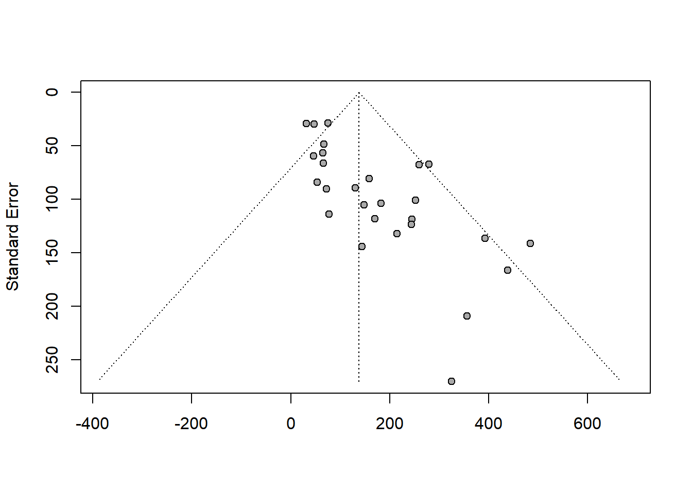
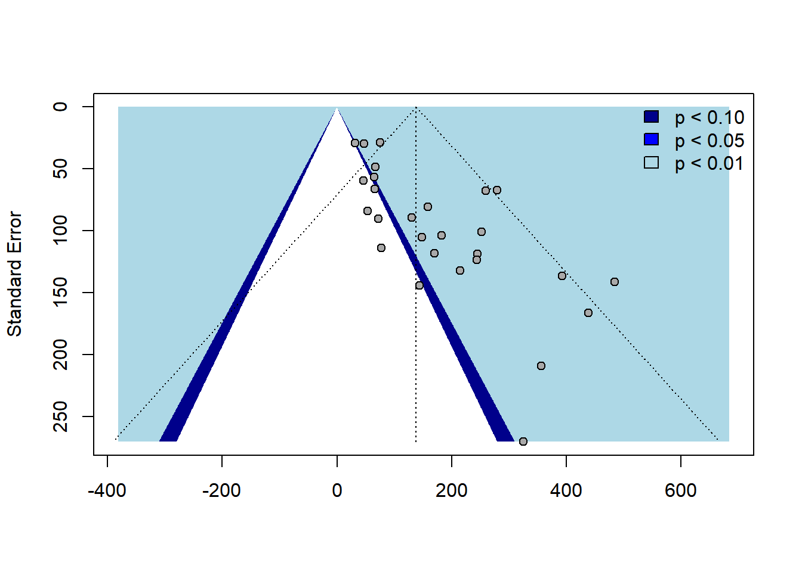

Loading 'meta' package (version 6.5-0).
Type 'help(meta)' for a brief overview.
Readers of 'Meta-Analysis with R (Use R!)' should install
older version of 'meta' package: https://tinyurl.com/dt4y5drs
```{r}library(metafor)```
Loading required package: Matrix
Loading required package: metadat
Loading required package: numDeriv
Loading the 'metafor' package (version 4.2-0). For an
introduction to the package please type: help(metafor)
```{r}library(dplyr)```
Attaching package: 'dplyr'
The following objects are masked from 'package:stats':
filter, lag
The following objects are masked from 'package:base':
intersect, setdiff, setequal, union
```{r}# Import the datasetsetwd("C:/Users/lizan/OneDrive/Documents/GitHub/RRcourse2023/13. Metaanalysis")data <-read_excel("metaanalysis_data.xlsx")# Using metagen() function for meta-analysis using fixed effect modelfixed_model <- meta::metagen(TE = data$Mean_boys_play_male,seTE = data$SD_boys_play_male,studlab = data$Study,comb.fixed =TRUE,comb.random =FALSE)# Display the results of fixed effect modelfixed_model```
Number of studies: k = 27
95%-CI z p-value
Common effect model 96.0551 [71.9496; 120.1605] 7.81 < 0.0001
Quantifying heterogeneity:
tau^2 = 5063.4218 [836.1518; 17480.4313]; tau = 71.1577 [28.9163; 132.2136]
I^2 = 48.7% [19.8%; 67.2%]; H = 1.40 [1.12; 1.75]
Test of heterogeneity:
Q d.f. p-value
50.67 26 0.0026
Details on meta-analytical method:
- Inverse variance method
- Restricted maximum-likelihood estimator for tau^2
- Q-Profile method for confidence interval of tau^2 and tau
The z-value is 7.81 and the associated p-value is less than 0.0001, indicating this result is statistically significant. This model assumes that all studies share a common effect size.
The measure I^2 is 48.7%, indicating that about 49% of the total variation across studies is due to heterogeneity rather than chance. H is 1.40, suggesting a moderate level of heterogeneity. The test of heterogeneity (Q test) has a p-value of 0.0026, indicating the presence of significant heterogeneity among the studies.
```{r}# Using metacont() function to combine fixed and random effectscombined_model <- meta::metacont(n.e = data$N_boys,mean.e = data$Mean_boys_play_male,sd.e = data$SD_boys_play_male,n.c = data$N_girls,mean.c = data$Mean_girls_play_male,sd.c = data$SD_girls_play_male,studlab = data$Study,comb.fixed =TRUE,comb.random =TRUE)# Display the results of the combined modelcombined_model```
Number of studies: k = 27
Number of observations: o = 1610
MD 95%-CI z p-value
Common effect model 46.8758 [41.2914; 52.4602] 16.45 < 0.0001
Random effects model 94.7832 [66.7897; 122.7766] 6.64 < 0.0001
Quantifying heterogeneity:
tau^2 = 4678.7733 [2666.5809; 10251.8327]; tau = 68.4016 [51.6389; 101.2513]
I^2 = 88.0% [83.7%; 91.1%]; H = 2.88 [2.48; 3.36]
Test of heterogeneity:
Q d.f. p-value
216.00 26 < 0.0001
Details on meta-analytical method:
- Inverse variance method
- Restricted maximum-likelihood estimator for tau^2
- Q-Profile method for confidence interval of tau^2 and tau
The heterogeneity in this model is high with I^2 at 88.0%. Given this result, there seems to be a significant effect of methods or quality on the results across studies.
```{r}# Perform random effects meta-analysisrandom_model <- meta::metagen(TE = data$Mean_boys_play_male,seTE = data$SD_boys_play_male,studlab = data$Study,comb.fixed =FALSE,comb.random =TRUE)# Display the results of random effect modelrandom_model```
Number of studies: k = 27
95%-CI z p-value
Random effects model 138.2605 [95.9332; 180.5879] 6.40 < 0.0001
Quantifying heterogeneity:
tau^2 = 5063.4218 [836.1518; 17480.4313]; tau = 71.1577 [28.9163; 132.2136]
I^2 = 48.7% [19.8%; 67.2%]; H = 1.40 [1.12; 1.75]
Test of heterogeneity:
Q d.f. p-value
50.67 26 0.0026
Details on meta-analytical method:
- Inverse variance method
- Restricted maximum-likelihood estimator for tau^2
- Q-Profile method for confidence interval of tau^2 and tau
The z-value is 6.40, and the associated p-value is less than 0.0001, indicating this result is statistically significant. This model allows for the possibility that the true effect could vary from study to study.
```{r}# Plotting forest plot for fixed effect model, sorted by Mean_boys_play_maleforest(fixed_model, sortvar = data$Mean_boys_play_male)# Perform meta-regression with author gender and neutral toys present as predictorsmetareg_model <-metareg(random_model, ~ data$`Female authors`+ data$`Neutral toys`)# Display the results of meta-regressionmetareg_model```
The Test for Residual Heterogeneity returns a p-value of 0.5090, indicating that there is no significant residual heterogeneity. The Test of Moderators returns a p-value of < 0.0001, indicating that the moderators (“Female authors” and “Neutral toys”) are significant.
This table gives the estimates of the coefficients in the model. For instance, the coefficient for “Female authors” is -76.2058 with a p-value of < 0.0001, indicating that the number of female authors is significantly associated with the effect size in the expected direction. The gender of the author does have a significant effect on the results. Studies authored by females tend to show a different effect size than those authored by other gender groups.
Similarly, the variable “Neutral toys” has a significant positive effect on the effect size.
```{r}# Plotting funnel plot for random effect modelfunnel(random_model)# Adding contours to the funnel plotcontour_levels <-c(0.70, 0.75, 0.75)contour_colors <-c("darkblue", "blue", "lightblue")funnel(random_model, contour = contour_levels, col.contour = contour_colors)legend("topright", c("p < 0.10", "p < 0.05", "p < 0.01"), bty ="n", fill = contour_colors)```


The displayed plot reveals an asymmetrical distribution, suggesting potential publication bias or variability among the studies (heterogeneity).